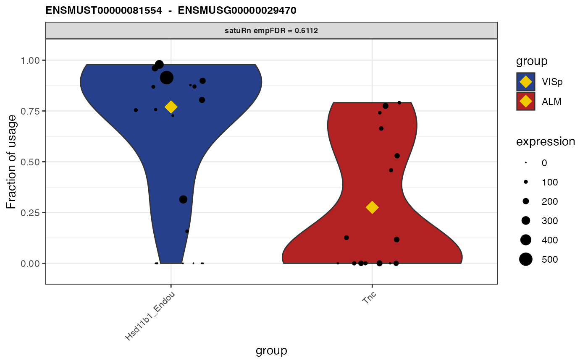
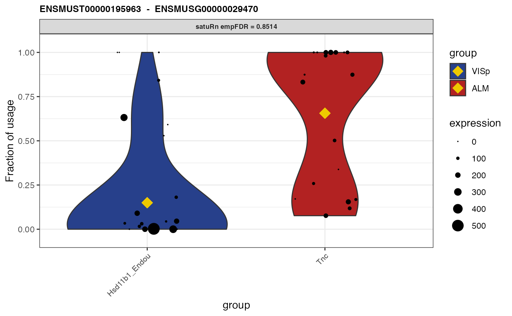
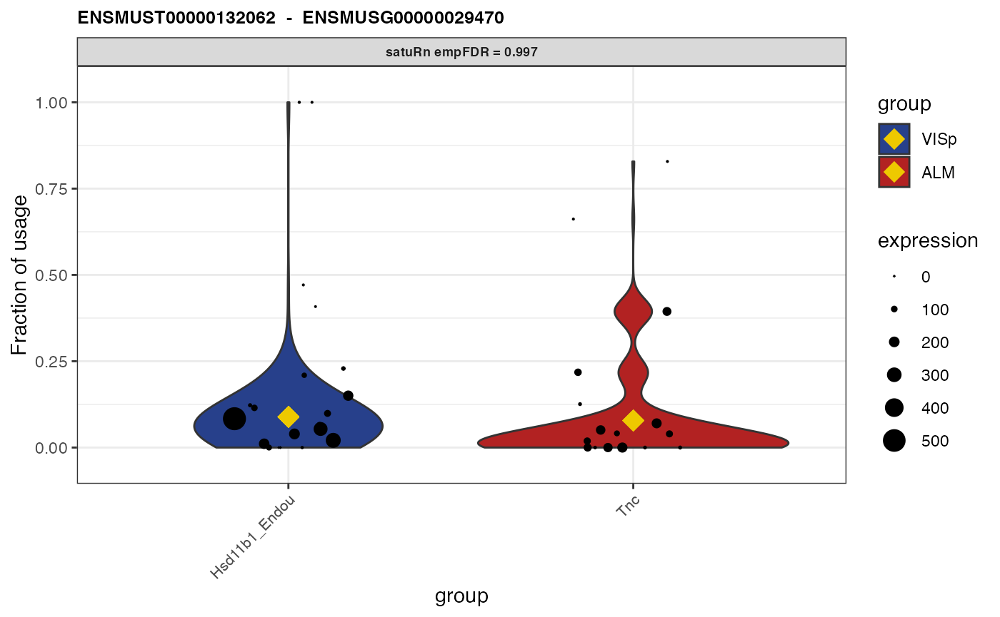

satuRn is an R package to perform differential transcript usage analyses in bulk and single-cell transcriptomics datasets. The package has three main functions.
The first function, fitDTU, is used to model transcript usage profiles by means of a quasi-binomial generalized linear model.
Second, the testDTU function tests for differential usage of transcripts between certain groups of interest (e.g. different treatment groups or cell types).
Finally, the plotDTU can be used to visualize the usage profiles of selected transcripts in different groups of interest.
All details about the satuRn model and statistical tests are described in our preprint (Gilis Jeroen 2021).
In this vignette, we analyze a small subset of the data from (Tasic Bosiljka 2018). More specifically, an expression matrix and the corresponding metadata of the subset data has been provided with the satuRn package. We will adopt this dataset to showcase the different functionalities of satuRn.
satuRn can be installed from Bioconductor with:
if(!requireNamespace("BiocManager", quietly = TRUE))
install.packages("BiocManager")
BiocManager::install("satuRn")The following data corresponds to a small subset of the dataset from (Tasic Bosiljka 2018) and is readily available from the satuRn package. To check how the subset was generate, please check ?Tasic_counts_vignette.
We start the analysis from scratch, in order to additionally showcase some of the prerequisite steps for performing a DTU analysis.
First, we need an object that links transcripts to their corresponding genes. We suggest using the BioConductor R packages AnnotationHub and ensembldb for this purpose.
ah <- AnnotationHub() # load the annotation resource.
all <- query(ah, "EnsDb") # query for all available EnsDb databases
ahEdb <- all[["AH75036"]] # for Mus musculus (choose correct release date)
txs <- transcripts(ahEdb)Next, we perform some data wrangling steps to get the data in a format that is suited for satuRn. First, we create a DataFrame or Matrix linking transcripts to their corresponding genes.
! Important: satuRn is implemented such that the columns with transcript identifiers is names isoform_id, while the column containing gene identifiers should be named gene_id. In addition, following chunk removes transcripts that are the only isoform expressed of a certain gene, as they cannot be used in a DTU analysis.
# Get the transcript information in correct format
txInfo <- as.data.frame(matrix(data = NA, nrow = length(txs), ncol = 2))
colnames(txInfo) <- c("isoform_id", "gene_id")
txInfo$isoform_id <- txs$tx_id
txInfo$gene_id <- txs$gene_id
rownames(txInfo) <- txInfo$isoform_id
# Remove transcripts that are the only isoform expressed of a certain gene
rownames(Tasic_counts_vignette) <- sub("\\..*", "",
rownames(Tasic_counts_vignette))
# remove transcript version identifiers
txInfo <- txInfo[txInfo$isoform_id %in% rownames(Tasic_counts_vignette), ]
txInfo <- subset(txInfo,
duplicated(gene_id) | duplicated(gene_id, fromLast = TRUE))
Tasic_counts_vignette <- Tasic_counts_vignette[which(
rownames(Tasic_counts_vignette) %in% txInfo$isoform_id), ]Here we perform some feature-level filtering. For this task, we adopt the filtering criterion that is implemented in the R package edgeR. Alternatively, one could adopt the dmFilter criterion from the DRIMSeq R package, which provides a more stringent filtering when both methods are run in default settings. After filtering, we again remove transcripts that are the only isoform expressed of a certain gene.
filter_edgeR <- filterByExpr(Tasic_counts_vignette,
design = NULL,
group = Tasic_metadata_vignette$brain_region,
lib.size = NULL,
min.count = 10,
min.total.count = 30,
large.n = 20,
min.prop = 0.7
) # more stringent than default to reduce run time of the vignette
table(filter_edgeR)## filter_edgeR
## FALSE TRUE
## 5996 10982
Tasic_counts_vignette <- Tasic_counts_vignette[filter_edgeR, ]
# Update txInfo according to the filtering procedure
txInfo <- txInfo[which(
txInfo$isoform_id %in% rownames(Tasic_counts_vignette)), ]
# remove txs that are the only isoform expressed within a gene (after filtering)
txInfo <- subset(txInfo,
duplicated(gene_id) | duplicated(gene_id, fromLast = TRUE))
Tasic_counts_vignette <- Tasic_counts_vignette[which(rownames(
Tasic_counts_vignette) %in% txInfo$isoform_id), ]
# satuRn requires the transcripts in the rowData and
# the transcripts in the count matrix to be in the same order.
txInfo <- txInfo[match(rownames(Tasic_counts_vignette), txInfo$isoform_id), ]Here we set up the design matrix of the experiment. The subset of the dataset from (Tasic Bosiljka 2018) contains cells of several different cell types (variable cluster) in two different areas of the mouse neocortex (variable brain_region). As such, we can model the data with a factorial design, i.e. by generating a new variable group that encompasses all different cell type - brain region combinations.
Tasic_metadata_vignette$group <- paste(Tasic_metadata_vignette$brain_region,
Tasic_metadata_vignette$cluster,
sep = ".")All three main functions of satuRn require a SummarizedExperiment object as an input class. See the SummarizedExperiment vignette (Morgan Martin, n.d.) for more information on this object class.
Do not forget to include the design matrix formula (see above) to the SummarizedExperiment as indicated below. As such, the object contains all the information required for the downstream DTU analysis.
sumExp <- SummarizedExperiment::SummarizedExperiment(
assays = list(counts = Tasic_counts_vignette),
colData = Tasic_metadata_vignette,
rowData = txInfo
)
# specify design formula from colData
metadata(sumExp)$formula <- ~ 0 + as.factor(colData(sumExp)$group)
sumExp## class: SummarizedExperiment
## dim: 9151 60
## metadata(1): formula
## assays(1): counts
## rownames(9151): ENSMUST00000037739 ENSMUST00000228774 ...
## ENSMUST00000127554 ENSMUST00000132683
## rowData names(2): isoform_id gene_id
## colnames(60): F2S4_160622_013_D01 F2S4_160624_023_C01 ...
## F2S4_160919_010_B01 F2S4_160915_002_D01
## colData names(4): sample_name brain_region cluster groupThe fitDTU function of satuRn is used to model transcript usage in different groups of samples or cells. Here we adopt the default settings of the function. Without parallelized execution, this code runs for approximately 15 seconds on a 2018 macbook pro laptop.
system.time({
sumExp <- satuRn::fitDTU(
object = sumExp,
formula = ~ 0 + group,
parallel = FALSE,
BPPARAM = BiocParallel::bpparam(),
verbose = TRUE
)
})## user system elapsed
## 14.803 0.479 15.305The resulting model fits are now saved into the rowData of our SummarizedExperiment object under the name fitDTUModels. These models can be accessed as follows:
rowData(sumExp)[["fitDTUModels"]]$"ENSMUST00000037739"## An object of class "StatModel"
## Slot "type":
## [1] "glm"
##
## Slot "params":
## $coefficients
## designgroupALM.L5_IT_ALM_Tmem163_Dmrtb1
## 1.612656
## designgroupALM.L5_IT_ALM_Tnc
## 1.773648
## designgroupVISp.L5_IT_VISp_Hsd11b1_Endou
## 1.232522
##
## $df.residual
## [1] 55
##
## $dispersion
## [1] 28.14375
##
## $vcovUnsc
## designgroupALM.L5_IT_ALM_Tmem163_Dmrtb1
## designgroupALM.L5_IT_ALM_Tmem163_Dmrtb1 0.004760564
## designgroupALM.L5_IT_ALM_Tnc 0.000000000
## designgroupVISp.L5_IT_VISp_Hsd11b1_Endou 0.000000000
## designgroupALM.L5_IT_ALM_Tnc
## designgroupALM.L5_IT_ALM_Tmem163_Dmrtb1 0.000000000
## designgroupALM.L5_IT_ALM_Tnc 0.004363295
## designgroupVISp.L5_IT_VISp_Hsd11b1_Endou 0.000000000
## designgroupVISp.L5_IT_VISp_Hsd11b1_Endou
## designgroupALM.L5_IT_ALM_Tmem163_Dmrtb1 0.000000000
## designgroupALM.L5_IT_ALM_Tnc 0.000000000
## designgroupVISp.L5_IT_VISp_Hsd11b1_Endou 0.004042164
##
##
## Slot "varPosterior":
## [1] 27.73976
##
## Slot "dfPosterior":
## [1] 59.4294The models are instances of the StatModel class as defined in the satuRn package. These contain all relevant information for the downstream analysis. For more details, read the StatModel documentation with ?satuRn::StatModel-class.
Here we test for differential transcript usage between select groups of interest. In this example, the groups of interest are the three different cell types that are present in the dataset associated with this vignette.
First, we set up a contrast matrix. This allows us to test for differential transcript usage between groups of interest. The group factor in this toy example contains three levels; (1) ALM.L5_IT_ALM_Tmem163_Dmrtb1, (2) ALM.L5_IT_ALM_Tnc, (3) VISp.L5_IT_VISp_Hsd11b1_Endou. Here we show to assess DTU between cells of the groups 1 and 3 and between cells of groups 2 and 3.
The contrast matrix can be constructed manually;
group <- as.factor(Tasic_metadata_vignette$group)
design <- model.matrix(~ 0 + group) # construct design matrix
colnames(design) <- levels(group)
L <- matrix(0, ncol = 2, nrow = ncol(design)) # initialize contrast matrix
rownames(L) <- colnames(design)
colnames(L) <- c("Contrast1", "Contrast2")
L[c("VISp.L5_IT_VISp_Hsd11b1_Endou","ALM.L5_IT_ALM_Tnc"),1] <-c(1,-1)
L[c("VISp.L5_IT_VISp_Hsd11b1_Endou","ALM.L5_IT_ALM_Tmem163_Dmrtb1"),2] <-c(1,-1)
L # contrast matrix## Contrast1 Contrast2
## ALM.L5_IT_ALM_Tmem163_Dmrtb1 0 -1
## ALM.L5_IT_ALM_Tnc -1 0
## VISp.L5_IT_VISp_Hsd11b1_Endou 1 1This can also be done automatically with the makeContrasts function of the limma R package.
group <- as.factor(Tasic_metadata_vignette$group)
design <- model.matrix(~ 0 + group) # construct design matrix
colnames(design) <- levels(group)
L <- limma::makeContrasts(
Contrast1 = VISp.L5_IT_VISp_Hsd11b1_Endou - ALM.L5_IT_ALM_Tnc,
Contrast2 = VISp.L5_IT_VISp_Hsd11b1_Endou - ALM.L5_IT_ALM_Tmem163_Dmrtb1,
levels = design
)
L # contrast matrix## Contrasts
## Levels Contrast1 Contrast2
## ALM.L5_IT_ALM_Tmem163_Dmrtb1 0 -1
## ALM.L5_IT_ALM_Tnc -1 0
## VISp.L5_IT_VISp_Hsd11b1_Endou 1 1Next we can perform differential usage testing using testDTU. We again adopt default settings. For more information on the parameter settings, please comsult the help file of the testDTU function.
sumExp <- satuRn::testDTU(
object = sumExp,
contrasts = L,
plot = FALSE,
sort = FALSE
)The test results are now saved into the rowData of our SummarizedExperiment object under the name fitDTUResult_ followed by the name of the contrast of interest (i.e. the column names of the contrast matrix). The results can be accessed as follows:
## estimates se df t pval
## ENSMUST00000037739 -0.5411265 0.4828721 59.4294 -1.1206416 0.26694865
## ENSMUST00000228774 0.5411265 0.4828721 59.4294 1.1206416 0.26694865
## ENSMUST00000025204 0.1929718 0.1952590 61.4294 0.9882864 0.32688926
## ENSMUST00000237499 -0.1929718 0.1952590 61.4294 -0.9882864 0.32688926
## ENSMUST00000042857 -0.8245461 0.4351069 58.4294 -1.8950427 0.06303775
## ENSMUST00000114415 0.8245461 0.4351069 58.4294 1.8950427 0.06303775
## regular_FDR empirical_pval empirical_FDR
## ENSMUST00000037739 0.6450007 0.3952020 0.9769609
## ENSMUST00000228774 0.6450007 0.4148973 0.9797565
## ENSMUST00000025204 0.6977858 0.4727593 0.9834579
## ENSMUST00000237499 0.6977858 0.4515026 0.9808231
## ENSMUST00000042857 0.3566360 0.1579658 0.9152296
## ENSMUST00000114415 0.3566360 0.1685028 0.9203772## estimates se df t pval
## ENSMUST00000037739 -0.3801339 0.4941514 59.4294 -0.769266 0.444782126
## ENSMUST00000228774 0.3801339 0.4941514 59.4294 0.769266 0.444782126
## ENSMUST00000025204 0.2971434 0.1921038 61.4294 1.546786 0.127051689
## ENSMUST00000237499 -0.2971434 0.1921038 61.4294 -1.546786 0.127051689
## ENSMUST00000042857 -1.4866500 0.4997583 58.4294 -2.974738 0.004257964
## ENSMUST00000114415 1.4866500 0.4997583 58.4294 2.974738 0.004257964
## regular_FDR empirical_pval empirical_FDR
## ENSMUST00000037739 0.7772316 0.56104440 0.9893602
## ENSMUST00000228774 0.7772316 0.58504064 0.9893602
## ENSMUST00000025204 0.5021149 0.26790898 0.9893602
## ENSMUST00000237499 0.5021149 0.25297843 0.9893602
## ENSMUST00000042857 0.1491038 0.03349528 0.9893602
## ENSMUST00000114415 0.1491038 0.03654226 0.9893602Finally, we may visualize the usage of select transcripts in select groups of interest.
group1 <- rownames(colData(sumExp))[colData(sumExp)$group ==
"VISp.L5_IT_VISp_Hsd11b1_Endou"]
group2 <- rownames(colData(sumExp))[colData(sumExp)$group ==
"ALM.L5_IT_ALM_Tnc"]
plots <- satuRn::plotDTU(
object = sumExp,
contrast = "Contrast1",
groups = list(group1, group2),
coefficients = list(c(0, 0, 1), c(0, 1, 0)),
summaryStat = "model",
transcripts = c("ENSMUST00000081554",
"ENSMUST00000195963",
"ENSMUST00000132062"),
genes = NULL,
top.n = 6
)
# to have same layout as in our paper
for (i in seq_along(plots)) {
current_plot <- plots[[i]] +
scale_fill_manual(labels = c("VISp", "ALM"), values = c("royalblue4",
"firebrick")) +
scale_x_discrete(labels = c("Hsd11b1_Endou", "Tnc"))
print(current_plot)
}


satuRn returns transcript-level p-values for each of the specified contrasts. While we have shown that satuRn is able to adequately control the false discovery rate (FDR) at the transcript level (Gilis Jeroen 2021), (Van den Berge Koen 2017) argued that it is often desirable to control the FDR at the gene level. This boosts statistical power and eases downstream biological interpretation and validation, which typically occur at the gene level.
To this end, (Van den Berge Koen 2017) developed a testing procedure that is implemented in the BioConductor R package stageR. The procedure consists of two stages; a screening stage and a confirmation stage.
In the screening stage, gene-level FDR-adjusted p-values are computed, which aggregate the evidence for differential transcript usage over all transcripts within the gene. Only genes with an FDR below the desired nominal level are further considered in the second stage. In the confirmation stage, transcript-level p-values are adjusted for those genes, using a FWER-controlling method on the FDR-adjusted significance level.
In its current implementation, stageR can only perform stage-wise testing if only one contrast is of interest in a DTU setting. An analogous correction for the assessment of multiple contrasts for multiple transcripts per gene has not yet been implemented.
Below, we demonstrate how the transcript-level p-values for the first contrast as returned by satuRn can be post-processed using stageR. We rely on the perGeneQValue function:
# transcript level p-values from satuRn
pvals <- rowData(sumExp)[["fitDTUResult_Contrast1"]]$empirical_pval
# compute gene level q-values
geneID <- factor(rowData(sumExp)$gene_id)
geneSplit <- split(seq(along = geneID), geneID)
pGene <- sapply(geneSplit, function(i) min(pvals[i]))
pGene[is.na(pGene)] <- 1
theta <- unique(sort(pGene))
# gene-level significance testing
q <- DEXSeq:::perGeneQValueExact(pGene, theta, geneSplit)
qScreen <- rep(NA_real_, length(pGene))
qScreen <- q[match(pGene, theta)]
qScreen <- pmin(1, qScreen)
names(qScreen) <- names(geneSplit)
# prepare stageR input
tx2gene <- as.data.frame(rowData(sumExp)[c("isoform_id", "gene_id")])
colnames(tx2gene) <- c("transcript", "gene")
pConfirmation <- matrix(matrix(pvals),
ncol = 1,
dimnames = list(rownames(tx2gene), "transcript")
)
# create a stageRTx object
stageRObj <- stageR::stageRTx(
pScreen = qScreen,
pConfirmation = pConfirmation,
pScreenAdjusted = TRUE,
tx2gene = tx2gene
)
# perform the two-stage testing procedure
stageRObj <- stageR::stageWiseAdjustment(
object = stageRObj,
method = "dtu",
alpha = 0.05,
allowNA = TRUE
)
# retrieves the adjusted p-values from the stageRTx object
padj <- stageR::getAdjustedPValues(stageRObj,
order = TRUE,
onlySignificantGenes = FALSE
)## The returned adjusted p-values are based on a stage-wise testing approach and are only valid for the provided target OFDR level of 5%. If a different target OFDR level is of interest,the entire adjustment should be re-run.
head(padj)## geneID txID gene transcript
## 1 ENSMUSG00000058013 ENSMUST00000201421 0.03732585 0.05697406
## 2 ENSMUSG00000058013 ENSMUST00000201700 0.03732585 1.00000000
## 3 ENSMUSG00000058013 ENSMUST00000074733 0.03732585 1.00000000
## 4 ENSMUSG00000058013 ENSMUST00000202217 0.03732585 1.00000000
## 5 ENSMUSG00000058013 ENSMUST00000202196 0.03732585 1.00000000
## 6 ENSMUSG00000058013 ENSMUST00000202308 0.03732585 1.00000000## R version 4.0.2 (2020-06-22)
## Platform: x86_64-apple-darwin17.0 (64-bit)
## Running under: macOS Catalina 10.15.7
##
## Matrix products: default
## BLAS: /Library/Frameworks/R.framework/Versions/4.0/Resources/lib/libRblas.dylib
## LAPACK: /Library/Frameworks/R.framework/Versions/4.0/Resources/lib/libRlapack.dylib
##
## locale:
## [1] en_US.UTF-8/en_US.UTF-8/en_US.UTF-8/C/en_US.UTF-8/en_US.UTF-8
##
## attached base packages:
## [1] stats4 parallel stats graphics grDevices utils datasets
## [8] methods base
##
## other attached packages:
## [1] stageR_1.12.0 DEXSeq_1.36.0
## [3] RColorBrewer_1.1-2 DESeq2_1.30.1
## [5] BiocParallel_1.24.1 ggplot2_3.3.3
## [7] SummarizedExperiment_1.20.0 MatrixGenerics_1.2.1
## [9] matrixStats_0.58.0 edgeR_3.32.1
## [11] limma_3.46.0 ensembldb_2.14.0
## [13] AnnotationFilter_1.14.0 GenomicFeatures_1.42.1
## [15] AnnotationDbi_1.52.0 Biobase_2.50.0
## [17] GenomicRanges_1.42.0 GenomeInfoDb_1.26.2
## [19] IRanges_2.24.1 S4Vectors_0.28.1
## [21] AnnotationHub_2.22.0 BiocFileCache_1.14.0
## [23] dbplyr_2.1.0 BiocGenerics_0.36.0
## [25] satuRn_0.99.6 knitr_1.31
##
## loaded via a namespace (and not attached):
## [1] colorspace_2.0-0 hwriter_1.3.2
## [3] ellipsis_0.3.1 rprojroot_2.0.2
## [5] XVector_0.30.0 fs_1.5.0
## [7] farver_2.0.3 bit64_4.0.5
## [9] interactiveDisplayBase_1.28.0 fansi_0.4.2
## [11] xml2_1.3.2 splines_4.0.2
## [13] cachem_1.0.4 geneplotter_1.68.0
## [15] jsonlite_1.7.2 locfdr_1.1-8
## [17] Rsamtools_2.6.0 annotate_1.68.0
## [19] shiny_1.6.0 BiocManager_1.30.10
## [21] compiler_4.0.2 httr_1.4.2
## [23] assertthat_0.2.1 Matrix_1.3-2
## [25] fastmap_1.1.0 lazyeval_0.2.2
## [27] later_1.1.0.1 htmltools_0.5.1.1
## [29] prettyunits_1.1.1 tools_4.0.2
## [31] gtable_0.3.0 glue_1.4.2
## [33] GenomeInfoDbData_1.2.4 dplyr_1.0.4
## [35] rappdirs_0.3.3 Rcpp_1.0.6
## [37] jquerylib_0.1.3 pkgdown_1.6.1
## [39] vctrs_0.3.6 Biostrings_2.58.0
## [41] rtracklayer_1.50.0 xfun_0.21
## [43] stringr_1.4.0 mime_0.10
## [45] lifecycle_1.0.0 statmod_1.4.35
## [47] XML_3.99-0.5 zlibbioc_1.36.0
## [49] scales_1.1.1 ragg_1.1.0
## [51] hms_1.0.0 promises_1.2.0.1
## [53] ProtGenerics_1.22.0 yaml_2.2.1
## [55] curl_4.3 memoise_2.0.0
## [57] pbapply_1.4-3 sass_0.3.1
## [59] biomaRt_2.46.3 stringi_1.5.3
## [61] RSQLite_2.2.3 highr_0.8
## [63] genefilter_1.72.1 BiocVersion_3.12.0
## [65] desc_1.2.0 boot_1.3-27
## [67] rlang_0.4.10 pkgconfig_2.0.3
## [69] systemfonts_1.0.1 bitops_1.0-6
## [71] evaluate_0.14 lattice_0.20-41
## [73] purrr_0.3.4 labeling_0.4.2
## [75] GenomicAlignments_1.26.0 bit_4.0.4
## [77] tidyselect_1.1.0 magrittr_2.0.1
## [79] R6_2.5.0 generics_0.1.0
## [81] DelayedArray_0.16.1 DBI_1.1.1
## [83] withr_2.4.1 pillar_1.5.0
## [85] survival_3.2-7 RCurl_1.98-1.2
## [87] tibble_3.1.0 crayon_1.4.1
## [89] utf8_1.1.4 rmarkdown_2.7
## [91] progress_1.2.2 locfit_1.5-9.4
## [93] grid_4.0.2 blob_1.2.1
## [95] digest_0.6.27 xtable_1.8-4
## [97] httpuv_1.5.5 textshaping_0.3.0
## [99] openssl_1.4.3 munsell_0.5.0
## [101] bslib_0.2.4 askpass_1.1